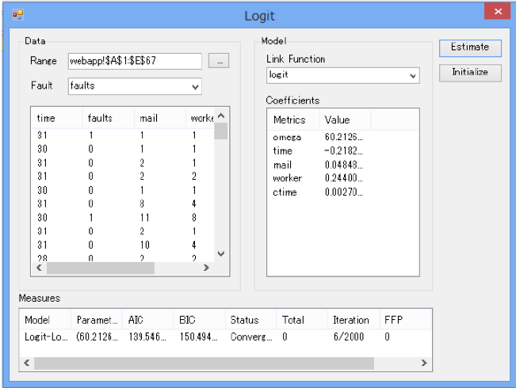
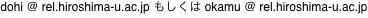

MSRATSとは
MSRATS (Metrics-Based Software Reliability Assessment Tool on Spreadsheet) は SRATSを拡張して，ソースコードやテストにおけるメトリクスを利用した信頼性評価を可能にします．IPA/SEC 2013年度ソフトウェア工学分野の先導的研究支援事業「次世代ソフトウェア信頼性評価技術の開発とその実装」において開発されました．
MSRATSはC#を用いたExcel AddInとして開発されています．MSRATSは次の特徴を持ちます．
- Excelのスプレッドシートからのデータ入力
- 時刻データ・個数データの両方に対応するデータ入力形式
- パラメータ推定および信頼性尺度計算の自動化
- Excelのグラフ描画機能を利用した信頼度関数などのグラフ描画
次のソフトウェア信頼性評価尺度をメトリクスを考慮したモデルに基づいて算出することができます．
- 予測総バグ数：単一のソフトウェアモジュール（プログラム単位orシステム単位）に内在する総バグ数の予測値．
- 予測残存バグ数：単一のソフトウェアモジュール（プログラム単位orシステム単位）に現時点で残存しているバグ数の予測値．
- ソフトウェア信頼度関数：一定期間中にバグが発見されない確率．
- FFP(fault-free probability)：現在のモジュールにバグがない確率．
- 各種MTTF(mean time to failure)，累積MTTF，瞬間MTTF，条件付きMTTF：バグ発見までの平均時間．
- Median，Betenlife：信頼度が0.5, 0.1になるまでの時間．
MSRATSで扱えるソフトウェア信頼性モデルは次の通りです．
- 11種類の典型的なNHPPモデル
- 動的メトリクスを扱うロジスティック回帰によるソフトウェア信頼性モデル
- 静的メトリクスを扱うポアソン回帰によるソフトウェア信頼性モデル
- 一般化線形ソフトウェア信頼性モデル

配布
ダウンロードを希望する方は下記のアドレスに連絡をください．折り返しご連絡いたします．
